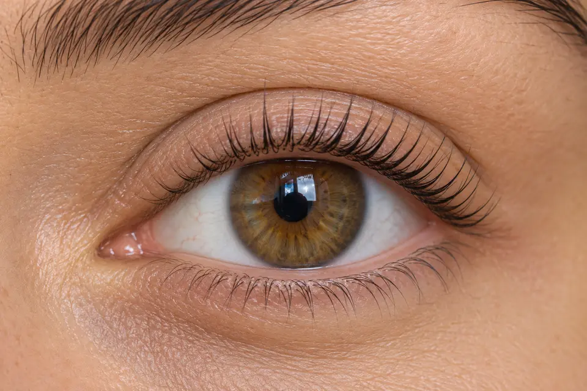
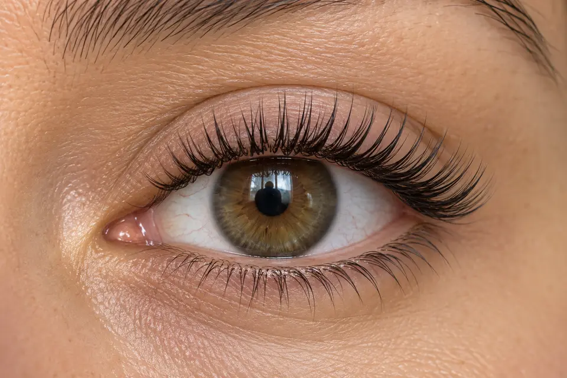
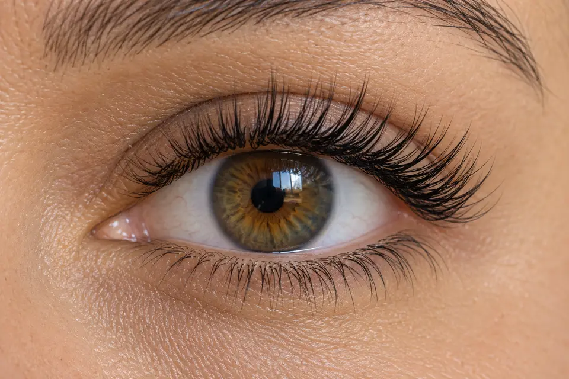
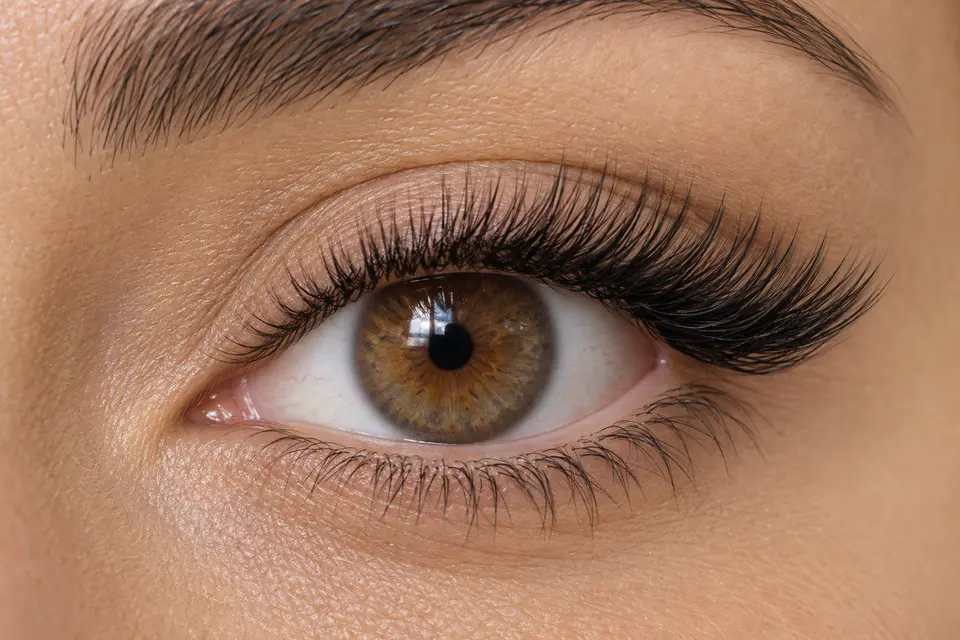

{kind=link}

01
Lash lift
Eleva e curva os próprios fios, sem adicionar extensões.
ESPECIALIDADE 02
Do lifting natural ao volume marcante. Veja a diferença de perto.

TÉCNICAS EM DESTAQUE
Compare a curvatura, o comprimento e o volume. Toque na foto para ampliar. O efeito e a densidade serão definidos com Ellen conforme os cílios naturais.

Eleva e curva os próprios fios, sem adicionar extensões.

Uma extensão por cílio natural. Comprimento e definição fio a fio.

Mistura fios individuais e pequenos leques para uma textura mais preenchida.
Leques de fios ultrafinos criam um visual bem cheio e volumoso.

Comprimentos maiores na região externa alongam o olhar. É um efeito de extensão, não um lash lift.
IMAGENS EDITORIAIS ILUSTRATIVAS GERADAS POR IA · NÃO REPRESENTAM TRABALHOS REALIZADOS PELO STUDIO
O CUIDADO
Esta é uma primeira proposta de serviços. Técnicas, efeitos, durações e valores serão ajustados com Ellen.
Técnicas, curvaturas e efeitos a definir.
Periodicidade e disponibilidade a confirmar.
{kind=link}
{kind=link}
{kind=link}